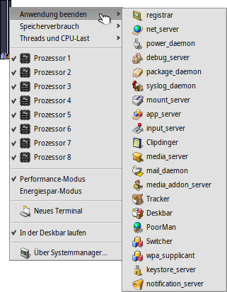
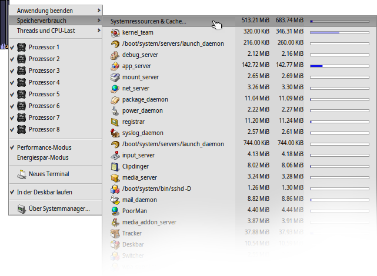

Deutsch
Deutsch Français
Français Italiano
Italiano Русский
Русский Español
Español Svenska
Svenska 日本語
日本語 Українська
Українська 中文 ［中文］
中文 ［中文］ Português
Português Suomi
Suomi Slovenčina
Slovenčina Magyar
Magyar Português (Brazil)
Português (Brazil) English
English Systemmanager
Systemmanager
| Deskbar: | ||
| Ort: | /boot/System/apps/Systemmanager | |
| Einstellungen: | keine |
 Hauptaufgabe von Systemmanager ist die Anzeige von Prozessorauslastung und Speichernutzung. Außerdem können einzelne Teams überwacht und ihre Priorität geändert, oder auch zum Beenden gezwungen werden, falls ein Programm hängt. Bei Multiprozessorsystemen können sogar einzelne CPUs/Cores abgeschaltet werden. Zusätzlich können Tracker und Deskbar aus dem Menü komfortabel neu gestartet werden, sollten sie mal abgestürtzt sein.
Hauptaufgabe von Systemmanager ist die Anzeige von Prozessorauslastung und Speichernutzung. Außerdem können einzelne Teams überwacht und ihre Priorität geändert, oder auch zum Beenden gezwungen werden, falls ein Programm hängt. Bei Multiprozessorsystemen können sogar einzelne CPUs/Cores abgeschaltet werden. Zusätzlich können Tracker und Deskbar aus dem Menü komfortabel neu gestartet werden, sollten sie mal abgestürtzt sein.
Die Balken links zeigen die Auslastung jeder CPU, rechts befindet sich ein Balken zur Speicherauslastung. Die Zahl der Balken hängt natürlich von der Anzahl an CPUs/Cores des Rechners ab.
Wenn das Programm nicht schon läuft, kann man beim Start entscheiden, ob das Applet in einem Fenster laufen oder in die Deskbar installiert werden soll. Im Fenstermodus kann die Balkengröße geändert werden, indem man die Fenstergröße anpasst, bevor man es am Replikanten-Symbol packt und auf den Desktop zieht.
Wo das Applet auch installiert ist, bedient wird es per Rechtsklick über ein Kontextmenü.
Um es wieder aus der Deskbar zu entfernen, deaktiviert man mit dem Kontextmenü die Option .
Anwendungen beenden
Um eine Anwendung zu beenden, wählt man einfach deren Namen aus dem Menü . Dadurch wird eine Anwendung sauber geschlossen, genauso als hätte man den Schließen-Button des Fensters geklickt. Besonders vorsichtig sollte man allerdings mit Systemprozessen wie Server und Daemons sein. Werden sie beendet, läuft das System eventuell nicht mehr stabil oder zumindest nicht mehr wie gewohnt.
Speichernutzung
Die Überwachung der Speichernutzung kann ziemlich ungenau sein.
Das Menü ermöglicht die Überwachung der Speichernutzung der diversen Teams im System. Neben dem Team-Name befinden sich zwei Spalten: die erste enthält den Speicher, der schreibend reserviert wurde, während die zweite den Gesamtspeicherbedarf zeigt, also inklusive nur lesend genutzten Speicher (von gemeinsam genutzte Bibliotheken, beispielsweise).
Die oberste Zeile Systemressourcen & Cache zeigt die gesamte Speichernutzung von System und allen Anwendungen. Die Länge des blauen Balkens repräsentiert dden physikalisch im Rechner vorhandenen Speicher. Die folgenden Reihen zeigen den benutzten Speicher für jedes Team. Die Länge der Balken entspricht nur dem tatsächlich benutzten Teil des Speichers.
| Speichernutzung einer Anwendung (beschreibbar) | ||
| Speichernutzung, inklusive nur lesend (geteilt mit anderen Anwendungen) |
Threads und CPU-Last
Mit diesem Menü lassen sich Thread-Prioritäten ändern und Teams zum Beenden zwingen oder debuggen.
| Kernel-Code | ||
| User-Code | ||
| Leerlauf-Thread |
Auf der ersten Ebene befinden sich die Team-Namen. Klickt man auf einen, kann das gesamte Team zum Beenden gezwungen werden. Der dunkelblaue Teil des Balkens entspricht der Zeit, die in Kernel-Code verbracht wird, der hellblaue Teil in User-Code, und der grüne Teil in den Leerlauf-Thread(s). Ein komplett blauer Balken bedeutet, dass dieses Team die gesamte Rechenleistung beansprucht.
Die zweite Ebene zeigt alle Threads eines Teams. Klickt man auf einen, kann er debugged oder zum Beenden gezwungen werden. Ein komplett blauer Balken bedeutet, dass dieser Thread einen Prozessor/Kern vollständig auslastet.
In der letzten Ebene des Menüs lässt sie die Priorität eines Threads ändern. Hier ist Vorsicht angesagt! In der Regel sollte die Priorität eines Threads umgekehrt zu seiner CPU-Auslastung sein. Das heißt, je mehr er versucht Rechenzeit zu bekommen, desto niedriger sollte seine Priorität sein. Am besten man spielt gar nicht erst mit Thread-Prioritäten einer Anwendung herum, sondern kontaktiert statt dessen deren Autoren; das ist deren Aufgabe.